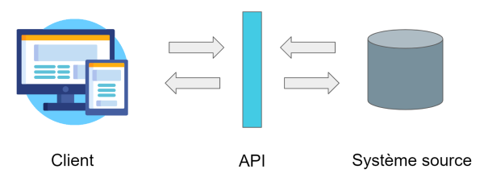

Dans le monde du développement web, les APIs constituent une partie essentiel du quotidien des développeurs. Les développeurs travaillent avec des APIs pour créer des logiciels et des applications.
Pensez à une Application Programming Interface comme un menu de restaurant. Le menu fournit une liste de plats que vous pouvez commander, ainsi qu’une description de chaque plat. Lorsque vous spécifiez les éléments du menu que vous souhaitez, la cuisine du restaurant fait le travail et vous fournit le plats en question. Vous ne savez pas exactement comment le restaurant prépare ces plats, et vous n’avez pas vraiment besoin de le savoir.
De même, une Application Programming Interface énumère un ensemble d’opérations que les développeurs peuvent utiliser, ainsi qu’une description de ce qu’ils font. Le développeur n’a pas nécessairement besoin de savoir comment, par exemple, un système d’exploitation se construit. Il doit juste savoir que cette fonction est disponible pour être utilisée dans son application.
Ce n’est pas une métaphore parfaite, car les développeurs peuvent avoir à fournir leurs propres données à l’API pour obtenir les résultats, donc c’est peut-être plus comme un restaurant chic où vous pouvez fournir certains de vos propres ingrédients avec lesquels votre plat sera confectionné, très peu salé, sans fromage ou avec des aubergines en plus par exemple.
Les APIs reposent sur l’idée de partager des données en coulisses. L’échange est l’un des piliers de cette technologie digitale. En 2001, les entreprises ont commencé à échanger des API web à la fois à l’intérieur et à l'extérieur de leur organisations. Désormais les API ont évolué et elles constituent aujourd’hui le coeur du fonctionnement du web. Entre 2005 et 2015, le nombre d’APIs dans la base de données Programmable Web’s a augmenté de 1 à 13.913. Une application météo, une carte de navigation ou même une application qui compare les prix des vols se servent des APIs pour afficher l’information que vous voyez.
Elles contribuent à simplifier les processus et à rendre notre vie plus facile. L’utilisation des APIs présente autant d’avantages pour l’utilisateur que pour le fournisseur. L’utilisateur pourra intégrer les fonctionnalités dans son application ou son site de façon dynamique et sans avoir besoin de connaître profondément le programme. Le fournisseur peut facilement introduire des modifications sur son programme sans déranger ceux qui utilisent ses fonctionnalités.
Les API sont également utilisées pour contrôler l’accès aux dispositifs matériels et aux fonctions logicielles qu’une application n’a pas nécessairement la permission d’utiliser. C’est pourquoi les API jouent souvent un rôle important dans la sécurité. Par exemple, si vous avez déjà visité un site web et vu un message dans votre navigateur indiquant que le site demande à voir votre position précise, ce site tente d’utiliser l’API de géolocalisation de votre navigateur web. Les navigateurs web utilisent ce type d’API pour faciliter l’accès des développeurs web à votre localisation : Cependant, l'utilisateur peut choisir d’autoriser ou de refuser cette demande.